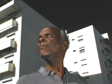

|
JUVENTUDE EM MARCHA (Collossal Youth)
Pedro Costa | P 2006 | 155 min.
Format: 35mm
Material: DV
Original language: Portuguese
Script: Pedro Costa
Camera: Pedro Costa, Leonardo Simoes
Editing: Pedro Marques
Sound: Oliver Blanc
Cast: Ventura, Vanda Duarte, Beatriz Duarte, Gustavo Sumpta, Cila Cardoso, Isabel Cardoso Alberto Barros
Production: Contracosta Produções
This semi-documentary film centres on Ventura, a Cape Verdean ex-labourer whose wife of thirty years decamps Lisbon for home and leaves Ventura wandering his new neighbourhood, Casal Boba, to visit his “children” - various lost souls who see him as a father figure. Among them is Vanda Duarte, familiar from Costa's previous two films, now on methadone and ensconced in a new apartment with husband and baby. Achieving grandeur with minimal means, Costa turns Ventura's encounters with the once or presently dispossessed into a humanist epic.
Nha cretcheu, my love,
being together again will make our lives beautiful
for another thirty years. (Excerpt of a letter written by Venturas to Vanda)
Pedro Costa, born in Lisbon in 1959. Majored in history and literature at the University of Lisbon. Studied at the National Film School and worked as an assistant director with Joan Botelho and Jorge Silva Melo. He is one of the most respected contemporary portuguese directors.
Films: O sangue 1990 | Casa de lava 1994 | Ossos 1997 | No quarto da Vanda 2000 | Où gît votre sourire enfoui? 2001 | 6 Bagatelas (2001 | Ne change rien 2005 Juventude em marcha 2006
back
|